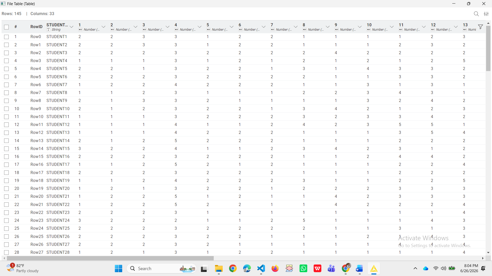
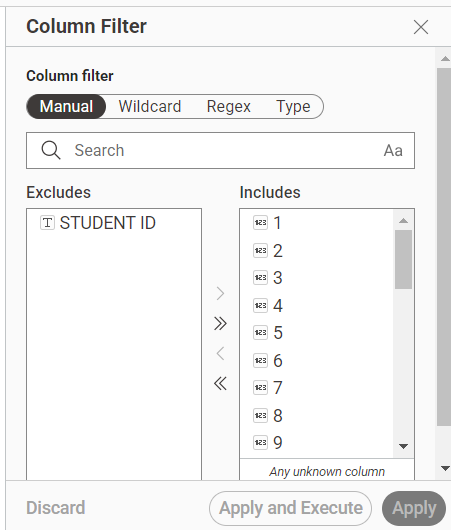
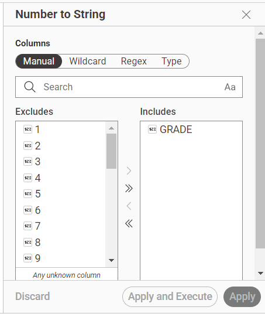
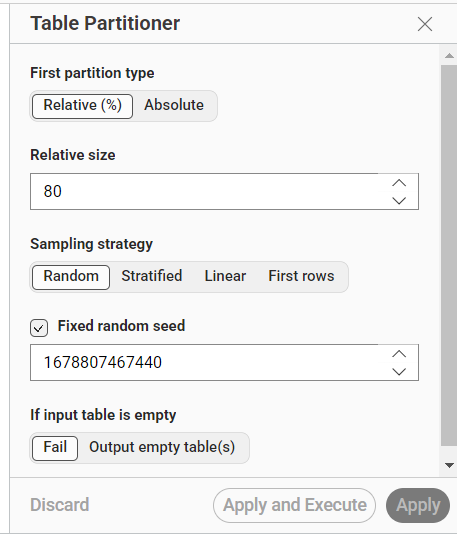
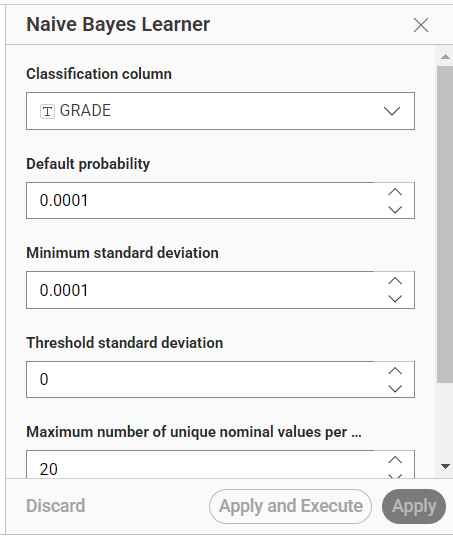
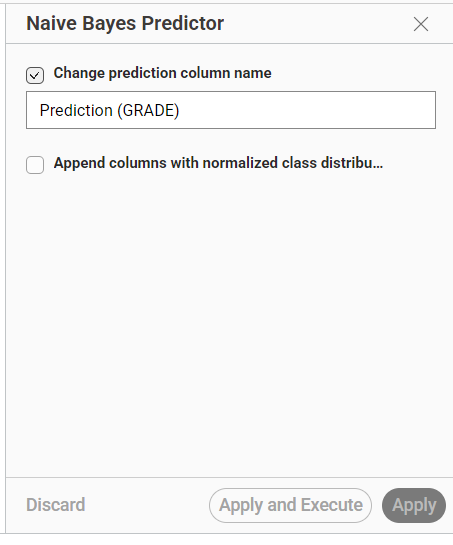
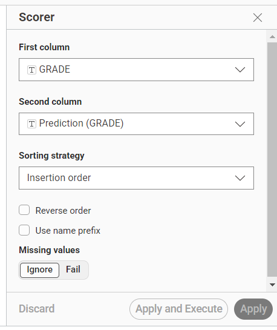
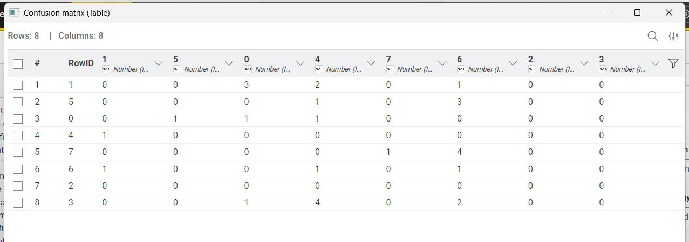
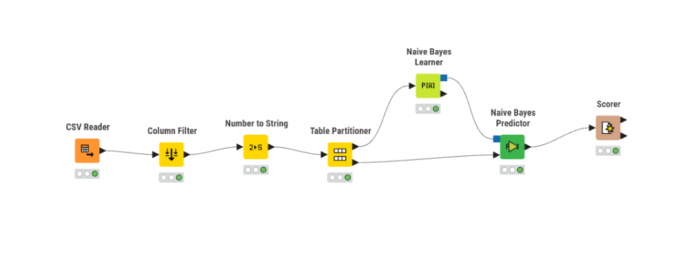

Analisis Klasifikasi Naive Bayes#
Pada analisis ini digunakan algoritma Naive Bayes untuk melakukan klasifikasi terhadap data mahasiswa. Tujuan analisis adalah memprediksi nilai akhir mahasiswa (GRADE) berdasarkan atribut yang terdapat pada dataset, yaitu COURSE ID dan hasil jawaban kuesioner pada atribut 1 sampai 30.
Dataset terdiri dari 145 data mahasiswa dengan 33 atribut yang meliputi:
Atribut |
Keterangan |
|---|---|
STUDENT ID |
Identitas mahasiswa |
COURSE ID |
Kode mata kuliah |
1–30 |
Jawaban kuesioner mahasiswa |
GRADE |
Nilai akhir mahasiswa (target klasifikasi) |
Tahapan Analisis#
1. Membaca Dataset#
Tahap pertama dilakukan dengan mengimpor dataset ke dalam KNIME menggunakan node CSV Reader. Node ini berfungsi untuk membaca file dataset sehingga seluruh atribut dapat dikenali dan digunakan pada proses analisis.
Setelah proses pembacaan selesai, seluruh data akan ditampilkan dalam bentuk tabel sehingga dapat dipastikan bahwa dataset berhasil diimpor dengan benar.

2. Menghapus Kolom STUDENT ID#
Tahap selanjutnya adalah melakukan preprocessing menggunakan node Column Filter. Pada tahap ini kolom STUDENT ID dihapus dari dataset.
Kolom STUDENT ID tidak digunakan dalam proses klasifikasi karena hanya berfungsi sebagai identitas unik setiap mahasiswa. Informasi tersebut tidak memiliki hubungan dengan nilai akhir mahasiswa sehingga tidak memberikan kontribusi dalam pembentukan model klasifikasi. Oleh karena itu, kolom tersebut dihapus agar model hanya mempelajari atribut yang benar-benar relevan.

3. Mengubah Tipe Data GRADE#
Kolom GRADE kemudian diubah dari tipe data numerik menjadi String menggunakan node Number To String.
Perubahan ini dilakukan karena GRADE merupakan target klasifikasi. Walaupun nilainya berupa angka, nilai tersebut bukan digunakan sebagai nilai numerik yang akan dihitung, melainkan sebagai label kelas yang akan diprediksi. Dengan mengubah tipe data menjadi String, KNIME akan mengenali GRADE sebagai kelas kategori sehingga dapat digunakan oleh algoritma Naive Bayes.
Pada tahap ini hanya kolom GRADE yang diubah menjadi String, sedangkan atribut lainnya tetap menggunakan tipe data aslinya.

4. Membagi Dataset#
Setelah proses preprocessing selesai, dataset dibagi menjadi dua bagian menggunakan node Table Partitioner.
Pembagian dilakukan dengan komposisi:
80% sebagai data training
20% sebagai data testing
Data training digunakan untuk membangun model klasifikasi, sedangkan data testing digunakan untuk menguji kemampuan model dalam melakukan prediksi terhadap data yang belum pernah dipelajari sebelumnya.
Pembagian data bertujuan agar hasil evaluasi model lebih objektif dan mampu menggambarkan performa model ketika digunakan pada data baru.

5. Membangun Model Naive Bayes#
Tahap berikutnya adalah membangun model menggunakan node Naive Bayes Learner.
Pada tahap ini model mempelajari hubungan antara seluruh atribut masukan dengan kelas target GRADE. Algoritma Naive Bayes bekerja menggunakan konsep probabilitas, yaitu menghitung peluang setiap kelas berdasarkan kombinasi nilai atribut yang dimiliki oleh setiap mahasiswa.
Model akan mempelajari pola-pola yang terdapat pada data training, kemudian menyimpan hasil pembelajaran tersebut sebagai model klasifikasi yang nantinya digunakan untuk melakukan prediksi.
Pemilihan algoritma Naive Bayes dilakukan karena dataset memiliki jumlah data yang relatif tidak terlalu besar dan sebagian besar atribut berupa data kategorikal atau data dengan skala penilaian yang seragam.

6. Melakukan Prediksi#
Model yang telah dibangun kemudian digunakan untuk memprediksi data testing menggunakan node Naive Bayes Predictor.
Pada tahap ini setiap data testing diproses menggunakan model yang telah dipelajari sebelumnya. Hasilnya berupa nilai prediksi GRADE untuk masing-masing mahasiswa beserta probabilitas setiap kelas.
Kolom Prediction(GRADE) menunjukkan hasil prediksi yang dihasilkan oleh model dan akan digunakan pada tahap evaluasi.

7. Evaluasi Model#
Tahap terakhir adalah mengevaluasi performa model menggunakan node Scorer.
Node Scorer membandingkan nilai GRADE yang sebenarnya dengan hasil Prediction(GRADE) yang dihasilkan oleh model. Dari proses tersebut diperoleh beberapa metrik evaluasi, yaitu Accuracy, Precision, Recall, dan Confusion Matrix.
Accuracy menunjukkan persentase data yang berhasil diprediksi dengan benar oleh model. Sementara itu, Confusion Matrix memberikan informasi mengenai jumlah prediksi yang benar maupun salah pada setiap kelas sehingga dapat diketahui kualitas model secara lebih rinci.
Semakin tinggi nilai accuracy dan semakin banyak prediksi yang berada pada diagonal utama confusion matrix, maka semakin baik performa model dalam melakukan klasifikasi.


Workflow Analisis#
Secara keseluruhan, proses analisis menggunakan KNIME dilakukan melalui tahapan berikut.

Kesimpulan#
Analisis klasifikasi dilakukan menggunakan algoritma Naive Bayes untuk memprediksi nilai akhir mahasiswa berdasarkan atribut COURSE ID dan hasil jawaban kuesioner pada atribut 1 sampai 30. Proses analisis dimulai dari pembacaan dataset, preprocessing data, pembagian dataset menjadi data training dan data testing, pembangunan model menggunakan Naive Bayes Learner, proses prediksi menggunakan Naive Bayes Predictor, hingga evaluasi model menggunakan Scorer.
Hasil evaluasi berupa accuracy dan confusion matrix digunakan untuk mengetahui tingkat keberhasilan model dalam melakukan klasifikasi terhadap data mahasiswa. Nilai evaluasi tersebut menjadi dasar dalam menilai performa algoritma Naive Bayes pada dataset yang digunakan.